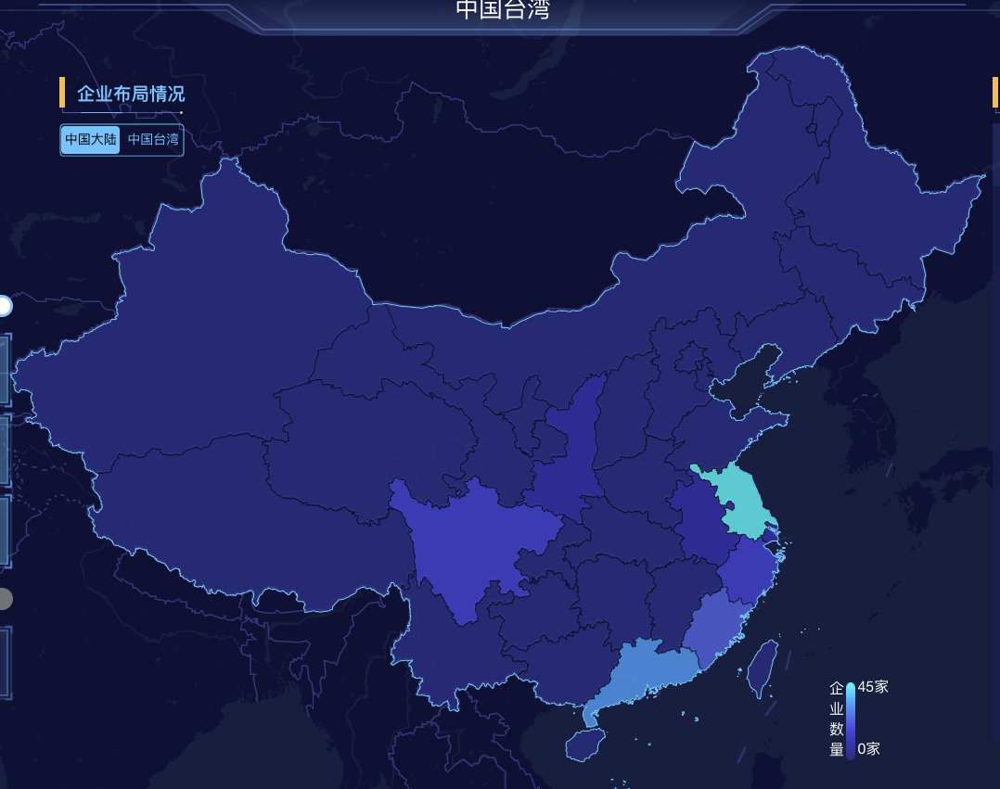

代码优化-充分利用
No picture, say jiba
首先我们先上图：

图一
图二
有没有发现这两张图的不一样的地方？图一地图颜色比图二的地图颜色更加丰富多彩，地图上的颜色是根据每个地区的数据渲染出来的，有一种基本色和五种根据数据变化的可选颜色，图二是我第一次写出来的效果，图二是修改完之后的效果，图二的效果也不是不能用，但是想到：
- 颜色没有充分利用
- 数据相差比较大的地区也使用相同的颜色，用户体验不好
于是我开始了代码优化，在改到最终版本之前，有两个版本。
版本一： 直接划分一个固定的区间，每个区间指定需要渲染的颜色，然后根据传入的数值跟固定区间的数值比较返回颜色值
这无疑是一个简单高效(代码可以写的快)的做法，但也可以肯定这不是一个好的做法。
版本二：这是我改的版本(为了快速迭代)，把区间变成了一个动态的，虽然好了那么一丢丢，但效果不尽人意
这两个版本遇到的问题：
- 数据极端分布(就像我跟马云平均一下也是个亿万富翁一样)，颜色不能充分利用
- 数据过于集中分布，颜色不能充分利用
于是我就想怎么样才能充分利用，这就要分情况讨论了
- 当需要渲染的地区没有超过我的颜色总数时，直接将颜色分配下去
- 当需要渲染的地区超过了我的颜色总数时，需要多个地区共用一个颜色
第一中情况比较简单，主要是第二种情况，需要确定要分几个区间，以及每个区间的大小
我的想法是先计算出可以分的的区间的最大值，然后从1枚举到可分区间的最大值，并计算区间的大小，就可以获得平均区间大小下的所有将颜色利用完的可能性，然后确定最优解，只有将数据大小相近的分配到一个区间才比较合适，所以我制定最优解是：根据每种可能性内区间最大值和最小值的差的平局值最小的取为最优。
确定可分区间的最大值(最多可以分几个区间)
let maxBlock= 传入数值的总数(去过重)/可选颜色的总数向上取整计算区间大小
let blockSize= (传入数值的总数(去过重) - 可选颜色的总数 + 当前区间的数量) / 当前区间数量算出每种情况下的差值的平均值
代码实现：
let colorMap = []
let countArr = mapAgg.map(item=> parseInt(item.count))
countArr = Array.from(new Set(countArr)).sort((x,y)=> x-y)
let countLen = countArr.length, colorLen = colors.length
if(countLen <= colorLen){
while(countLen>-1){
countLen--;
colorMap[countArr[countLen]] = colors[--colorLen]
}
}else{
let maxBlock = Math.ceil(countLen/colorLen)
let blockDiff = [], blockDiffDetail= []
for(let blockCount= 1;blockCount<= maxBlock;blockCount++){
let blockSize = (countLen-colorLen+blockCount)/blockCount
if(blockSize<=0) continue
let start= 0, end= start+blockSize
let localOptimum = []
while(end<countLen){
localOptimum.push({start: start,end:end-1,value:countArr[end-1]-countArr[start]})
start++
end = start+blockSize
}
localOptimum.sort((x,y)=> x.value-y.value)
localOptimum = localOptimum.slice(0,blockSize)
blockDiff.push(localOptimum[0].value)
blockDiffDetail.push(localOptimum)
}
let minValue = Number.MAX_VALUE, minValueIndex
blockDiff.forEach((value, index)=>{
if(value<minValue){
minValue = value
minValueIndex = index
}
})
let perfectDiff = blockDiffDetail[minValueIndex]
perfectDiff.forEach((item,index)=>{
let arg = index
for(let i=item.start;i<=item.end;i++){
colorMap[i] = -index
}
})
while(countLen>-1){
countLen--
if(colorMap[countArr[countLen]]< 0){
colorMap[countArr[countLen]] = colors[colorLen -1]
}else{
colorMap[countArr[countLen]] = colors[--colorLen]
}
}
}总结
其实这样也不是特别好，区间大小分配是均匀的，还是太菜了，要多学算法